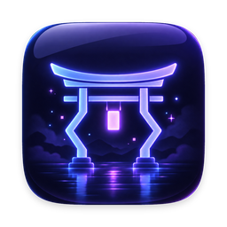
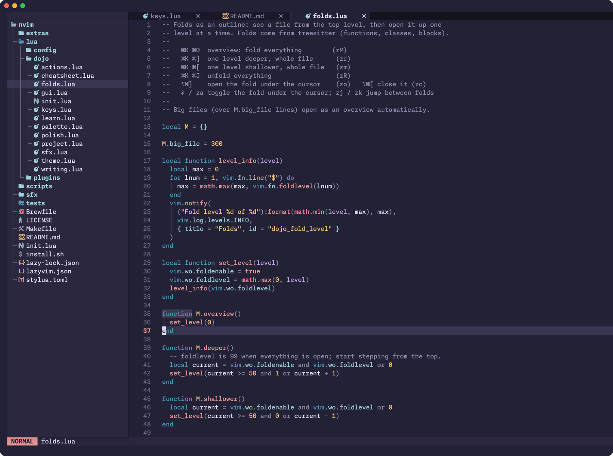

Dojo
A calm code editor for macOS. Neovim that opens like VS Code, speaks the Cmd shortcuts you know, and quietly teaches you Vim as you go.
bash -c "$(curl -fsSL https://raw.githubusercontent.com/yask123/nvim-macos/main/install.sh)"
Paste into Terminal. Installs everything it needs, backs up any existing Neovim setup, then open Dojo from Spotlight.

Keys you already know
⌘P, ⌘⇧F, F12, ⌘/. Every shortcut shows its Vim twin, so you learn by doing.
Read code top‑down
Big files open as an outline. Fold in and out one level at a time.
Quiet by design
One family of type, one calm theme, no animation. It follows your Mac's light and dark.
The essentials
| Open a folder | ⌘O | :cd |
| Find a file | ⌘P | Space Space |
| Search the project | ⌘⇧F | Space / |
| Go to definition | F12 | gd |
| Run this file | ⌘R | Space r r |
| Every shortcut | ⌘K ⌘S | Space ? |